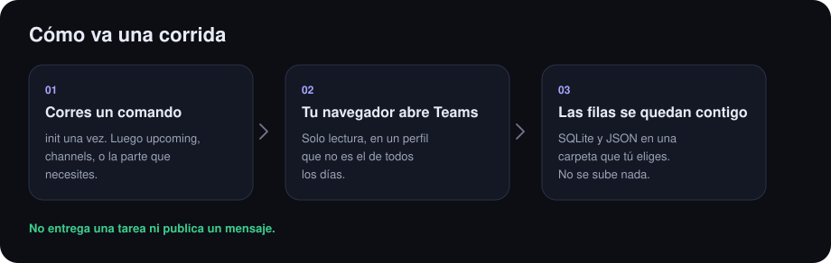
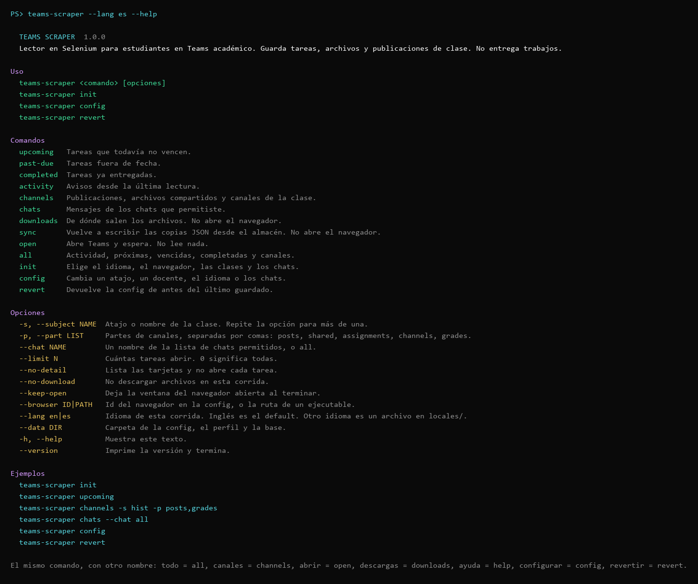
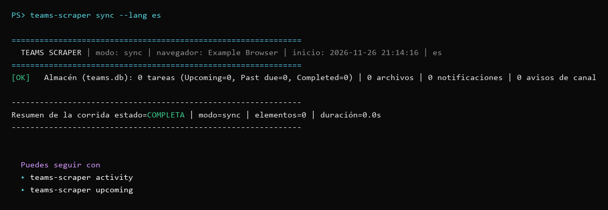

Teams Scraper
Lee el Teams de tus clases y lo guarda en tu máquina. Tareas, archivos, notas y publicaciones. No entrega trabajos.
Si quieres usarlo ya
pip install teams-scraper
teams-scraper init
teams-scraper upcoming --limit 1init pregunta el idioma, el navegador y qué clases abrir. La primera lectura pide una sola tarea, para que veas qué regresa. El recorrido está en Instalación y Primer uso.
Navegadores

En la ventana que abre el programa, apaga los bloqueadores y los escudos. Se pelean con Teams.
Cómo va una corrida

Qué hace
Sirve para el Teams de clase: las tareas, las notas, los canales y los archivos que un estudiante ya puede ver.
- Lee Upcoming, Past due y Completed, y abre cada tarea que pidas.
- Guarda la lista de clases, las publicaciones, los archivos compartidos y las notas cuando pides esas partes.
- Mantiene un perfil de navegador en tu carpeta de datos. No usa el perfil de cada día.
- Habla inglés salvo que pases
--lang eso pongaslanguageen la config. - Guarda las filas en SQLite. Otro proyecto puede pasar su propio almacén a
run(store=...).
Si una corrida se detiene
Se detiene con un código estable, como config.missing o browser.profile_locked. La frase cambia con el idioma. El código no. La lista está en Errores. La guía por síntoma está en Cuando falla.
Así se ve
Las imágenes son el programa. La clase de los ejemplos es inventada, y una ruta de tu usuario se tapa antes de guardar la foto.





Con qué está hecho
| Pieza | Qué usa |
|---|---|
| Comando | teams-scraper |
| Navegador | Selenium 4. Chromium para Chrome, Edge, Brave y Opera. Firefox para Firefox, LibreWolf y Zen. |
| Almacén | SQLite en tu carpeta de datos, o una clase que pases |
| Texto | locales/en.json y locales/es.json |
| Errores | TeamsScraperError.code |
Versión 1.0.0, del 26 de noviembre de 2026. Licencia MIT. El código está en github.com/notnomoro/teams-scraper.